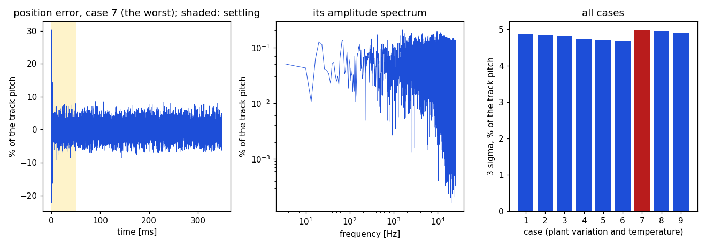

hdd-track-follow-beat50-margins
Hard disk drive, dual-stage head positioning · solved 6 of 6 agent attempts pass
more
The IEEJ/Atsumi HDD benchmark: a 48-state dual-input single-output plant (VCM rigid body plus 15 resonances, PZT with 8) sampled at 50.4 kHz with two actuator updates per sample, nine plant cases (three temperatures x three PZT gains) visited in a hidden order, each with its own realisation of rotational vibration, fan-induced vibration and repeatable run-out; the controller sees the position error signal only and 3-sigma of the head position is evaluated between the samples, over 0.3 s per case (159 thousand controller calls per seed, each a round trip to the controller's own process). Without the margins the minimum-variance LQG reaches 0.41 x (4.3 dB, 24.5 deg, 9.8 dB); with them the best design known then was a full-order LQG with the run-out variance inflated 50-fold at 0.68 x, and the one-parameter LQG family reaches about 0.65 x before the phase margin falls below 30 deg (at 0.56 x it has 25-27 deg and a 7.1-7.7 dB peak). Whether a single linear controller, or one that identifies the plant case, can reach 0.50 x inside these margins was not known then. It can: the effort-max sweep of 2026-11-24/25 solved the task in all six sessions (Opus 5.5 and Fable 5.2), and the solution/ controller is one of theirs, an LQG designed per temperature on the lifted multirate model with the VCM rolled off early, at 0.36 x with 8.7 dB, 41 deg and a 4.4 dB peak; the thresholds are fixed by rule (a fixed fraction of the frozen incumbent level, the conventional margins, the incumbent's own peak), not fitted to a design.
Gate. per-seed success is the `beat50` rung of this benchmark's ladder ['stable', 'match', 'beat5', 'beat10', 'beat25', 'beat50'] (`--success-mode beat50`), not the evaluator's default flag; the task is solved when the success rate over the grader's held-out seeds is `>= 0.9`; the structured check `loop-margins` is reported as the last rung and must pass as well (`--require-certificate`)
Axes: plant:hdd, scenario:track_follow_v0, gate:beat50, certificate:loop-margins, incumbent:benchmark-example-controller, cases:nine-hidden, domain:time+frequency, built:open
Each video or figure re-runs the attempt's final controller through the task's own evaluator on a public seed (never the grader's held-out ones). The table under each one is the official grade on the held-out seeds.


track_follow_v0| criterion | graded | needed |
|---|---|---|
| base:beat50 | 1.000 | ≥ 0.900 |
| certificate | 1.000 | ≥ 1.000 |
The agent's final message
`/app/work/controller.py` passes the gate on the visible seeds: 5/5 seeds reach `beat50` and the `loop-margins` certificate passes. This is from the official evaluator command on seeds 0–4, run on the final file; it took 23 of the 60 minutes. | Criterion | Requirement | Measured (seeds 0–4) | | --- | --- | --- | | Worst-case 3σ over nine cases | ≤ 7.395 % of track pitch | 4.91–5.01 % (about 0.34 × the incumbent) | | Gain margin, worst case | ≥ 6 dB | 9.11 dB | | Phase margin, worst case | ≥ 30° | 41.0° | | Sensitivity peak, worst case | ≤ 6.5 dB | 4.33 dB | | Linearity error between the two probes | ≤ 1e-4 | 1.9e-13 | | PZT displacement in the window | < 50 nm | ≤ 12.7 nm | | Controller CPU per rollout | ≤ 1.5 s | ≤ 0.46 s | On 45 other seeds simulated in-process (not through the official evaluator), the worst 3σ was 5.035 % and the temperature was never misidentified. ## How it works - **Model:** for each temperature (LT, RT, HT) the benchmark's 48-state plant is augmented with its own disturbance filters (rotational vibration and the 13 fan resonances) and lifted exactly to the PES rate. - **Observer:** a Kalman filter on that model, with the run-out treated as measurement noise so the head does not follow it. Its design noise variance `R_FICT` is the knob that trades 3σ against margins. - **Feedback:** an LQR that minimises the head position at all 20 intersample instants, plus a small penalty `RHO_PZT` on PZT displacement. - **Temperature selection:** three observers …
Shown: public seed 0 (track_follow_v0); this episode passes the beat50 rung. This episode: sigma3_worst_pct 4.98, ratio_to_incumbent 0.336, worst_case 7, pzt_max_nm 9.83, cases_completed 9, first_failed_case 0, failed_case_steps 0, total_reward -4.98. The plant variation with the largest error of this attempt, run again: position error, its spectrum, and 3 sigma on all nine cases.
controller.py · trial hdd-track-follow-beat50-margins__zaGBZuC